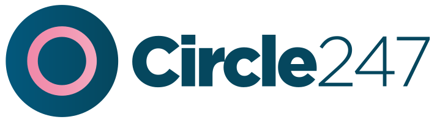
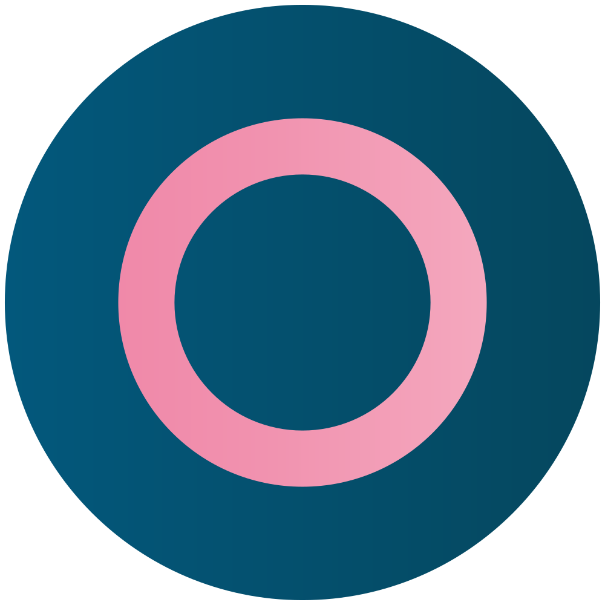

This helps us set up your circle
Who's in your circle?
Pick everyone you'd keep close. We'll set each of them up in a moment.
🧒A child
🎒A teenager
💛My partner
👵A parent
🧓A grandparent

Wherever they wander, they’re in your circle.

Two ways in. Pick the one that's you.
Pick everyone you'd keep close. We'll set each of them up in a moment.
Pick any that apply. You can add more than one.
Teenagers get a gentler, mutual setup by default. Pick any that apply.
Sharing goes both ways, so you'll see their dot too. Pick the one that fits.
Eldercare setups lead with the offline heartbeat. Pick any that apply.
Circle247 is lovely for keeping grandparents close. Pick any that apply.
One for each person you picked. We keep them personal, and never share them.
Pick any that ring true, and we'll set the circle up for those moments.
No right answer, and only share if you'd like to. It just shapes how gently we check in.
Circle247 is a circle of care, not a tracker. Your people share their dot too, so it's mutual, it's agreed, and it's quiet until the one moment it matters. We will never sell your family's location.
In a survey of Circle247 Guardians, 9 in 10 said they sent fewer anxious “are you home yet?” texts within the first week.
Example figures for this prototype.
Naming it helps us put the right things front and centre.
Say it out loud. It's the thing we're really here to give you.
It's a sequence, not a tap. Up, up, down on the volume buttons. The phone buzzes three times, pauses, then does it twice more. Nine buzzes in three bursts, so Maya knows the alert reached everyone.
If Maya's phone goes quiet for 10 minutes, your Inner Circle is told, with a last known location. Perfect for flat batteries and no signal spots.
One tap on a schedule you agree together. A quick “home safe”, no fuss. Everyone breathes out.
Rated ★★★★★ by thousands of Guardians.
“My mum lives 200 miles away. Now I know she's okay without hovering. It's given us both our freedom back.”
“The calmest app on my phone. It does nothing… until the one day it did everything.”
Example reviews for this prototype.
Alerts are the whole point of a circle. An SOS is no use if it stays silent, so we'll only ever ping you when it counts.
Pick from your contacts and they'll get a friendly invite. Members are always free.
If a friend or a creator sent you, pop it in for a little extra. You can skip this step.
Building your circle…
Invites are on their way. Each person pops in as they accept.
Here's Maya, Sarah and Grandma once they're in. Try it free before you pay a penny.
Exactly what happens, no surprises.
Keep Maya, Sarah and Grandma set up, with 50% off your first year. 🎁
for your first year · lowest price we offer
Everyone you added is on their way in. Now it just does its job, quietly.
Someone in your family texted you a link to this app and a code. Pop the code in below to join their circle.
Dad added you. Sharing goes both ways, so you'll see them and they'll see you. And it stays free for you, always.
It's a sequence, not a tap. Up, up, down on the volume buttons. The phone buzzes three times, pauses, then twice more. Nine buzzes in three bursts, so your whole circle knows.
It goes both ways. If anyone in your circle sends an SOS, you'll know in an instant.
That's it. It stays quiet until it matters, and it's free for you. No payment, ever.